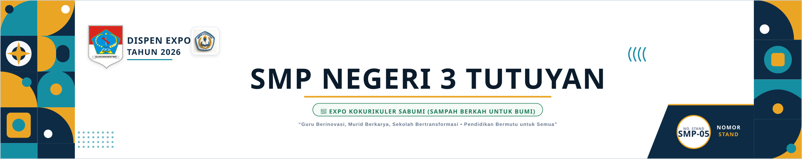

Pratinjau Hasil Desain Fasia Stand (Format Cetak Asli 3000 × 600 px)

📐
Ukuran & Proporsi
- Dimensi Standar Fasia: 300 cm × 60 cm
- Ukuran Alternatif: 250 cm × 50 cm
- Rasio Aspek: 5 : 1 (Horizontal)
- Resolusi Vektor Asli: 3000 × 600 px (Scalable)
🖨️
Instruksi Percetakan
- Bahan Terbaik: Flexi Korcin 440 gsm
- Bahan Alternatif: Flexi Frontlite 380 gsm
- Finishing Cetak: Mata Ayam 4 Sudut + Lem
- Rekomendasi Warna: CMYK High-Resolution
🏷️
Identitas Stand Resmi
- Nama Sekolah: SMP Negeri 3 Tutuyan
- Nomor Stand: SMP-05
- Program Utama: Inovasi SABUMI 3R
- Instansi Penyelenggara: Disdikbud Kab. Boltim
💡 Elemen Desain yang Diadaptasi dari Foto Acuan:
1. Pola Geometris Kiri & Kanan
Pola ubin Bauhaus modern dengan kombinasi warna Deep Navy, Mustard Yellow, Cyan, dan Cream persis sesuai template DISPEN.
2. Logo Resmi & Penyelenggara
Lambang resmi Kabupaten Bolaang Mongondow Timur dan teks DISPEN EXPO TAHUN 2026 serta logo sekolah SMPN 3 Tutuyan.
3. Tipografi Lengkung & Judul
Teks lengkung SELAMAT DATANG DI STAND warna cyan bergaris tepi tegas, diikuti SMP NEGERI 3 TUTUYAN ekstra tebal.
4. Lencana Nomor Stand
Polygon miring di sudut kanan bawah dengan lingkaran putih berisikan kode stand SMP-05 dan aksen garis gelombang cyan.